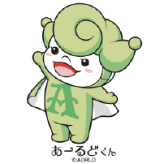

平成17年、前身である「NPO法人あーるど」を立ち上げてからはや十数年が経過しました。子どもたちの放課後支援に始まり、今では就労支援やグループホームの運営、強度行動障害などなかなか支えることが困難とされる方々への支援へと発展してきました。この間、日本のとりわけ地方の姿は大きく変化してきたように思います。地方経済の衰退に伴って街並みが変わってきたばかりでなく、東京への人口一極集中と超少子高齢社会の到来で、人々の生活そのものが変わってきました。競争で人と人の関係性が摩耗し、精神的なゆとりが少なく、閉塞感を感じることも少なくない。そんな感覚を持っている人たちは少数ではないでしょう。
当法人を運営してくる中で感じたことは、グローバリゼーションの進展と共に単に国が貧しくなっていくとう事ばかりではなく、我が国の文化そのものが崩れ、人々が寄りかかる柱がなくなってきているのではないかと思っています。それは何か有名な歴史的遺産とか、有名な芸術作品のことではなく、庶民の文化の事です。人々が共に働き、共に遊び、共に感じる。地震などの災害の多い島国において、毎年訪れる美しい四季の移ろいの中で人々が共に楽しく生きていくために醸成してきた庶民の文化そのものの事です。
社会福祉法人あーるど
は令和３年度より新たな拠点で新たな目標に着手します。私たちがこれから目指していくのは「再び文化を耕していくこと」です。文化を意味する英語「culture」はラテン語「colere」に由来し、初めは「土地を耕す」ことの意味で用いられていたものが「心を耕す」ことの意味で用いられるようになり、教養や文化を意味するように変わっていったと言われています。「colere」のスイッチを再び「ON」にする。新たな拠点「これるおん
」（Colere-on）を通じて、障害をお持ちの方がまちづくりの中核を担う。そのような新たな取り組みに挑戦します。
困難な社会にあっても創造し続けることで楽しく乗り越えていく。そんな法人づくりに引き続き全力を注いで参ります。

大橋 一之（オオハシ カズユキ）プロフィール
社会福祉法人あーるど 理事長
AORLD

私たちの福祉実践はふるさと「青森」を誰もが暮らしやすいコミュニティにして、次世代にバトンタッチしていくものであり、その実践はやがて国境を超えていくモデルたらんという想いを込めて、WORLDのWをAOMORIのAとしました。
私たちは「障害者」「高齢者」という視点ではなく、一人の「〜さん」のニーズを考え続けられる福祉実践をしたいと考えています。
理想を掲げるだけではなく、それを実現させるための力や方法を身につけます。もちろんビジネスの視点も不可欠ですし、理念に裏打ちされたピラミッド型の強い組織力で実現を目指します。
支援を受ける人も、提供する人も、地域社会も共に豊かになっていけるような実践を目指します。
クリエイティブな福祉や、目的志向型の活動や働き方を重要視しています。構想に向かって組織が一つになることを大切にします。
平成18年3月13日
陸奥新報 自閉症児者をどう支援 五所川原「親の会」初の勉強会
平成21年5月24日
平成24年11月20日
平成26年10月24日
平成26年12月17日
陸奥新報 障害者理解 交流に期待 青森で初のバリアフリー映画上映会
平成28年3月11日
平成28年5月14日
平成28年5月14日

私たちの社会福祉法人あーるどのミッションは、「子ども達が希望に溢れ、大人たちが責任に立ち向かい、高齢者たちが優しさを語らえる地域社会を創ること」。そのために必要なことは、職員たちが法人理念に基づき日々の業務にあたっていくこと。遠い遠い目標に向かって、「いつの間にか夢がかなうように」柔らかく歩みを進めることです。
①ミッション
②フィロソフィー
サービスを受ける人たちに関すること
地域や社会のこと
サービスを提供する人たちに関すること
「いつのまにか 夢がかなうように」
（作詞・作曲 坂本サトル）
君の話を聞いている 途方もない話さ
雲を掴むような けれど胸が高鳴る
愛し愛され生きる 誰もが夢見るけど
生きていくって事は うまくいかない日々の連続だ
青い森に広がる新しい世界を
歩き始めたなら あとは進むだけ
春を待ちわびながら 夏を刻みながら
君がいる毎日に そっと灯る光になるよ
秋をかみしめながら 冬をいたわりながら
やわらかく 丁寧に
いつの間にか夢がかなうように
白と黒 上と下と どちらか決めなくていい
窮屈は知らぬ間に 自分で作り出してた
君が知らなかった新しい世界が
ほらすぐ隣で 「ここにあるよ」と光ってる
春を待ちわびながら 夏を刻みながら
君がいる毎日に そっと灯る光になるよ
秋をかみしめながら 冬をいたわりながら
やわらかく 丁寧に
いつの間にか夢がかなうように
春を待ちわびながら 冬をいたわりながら
やわらかく 丁寧に
いつの間にか夢がかなうように